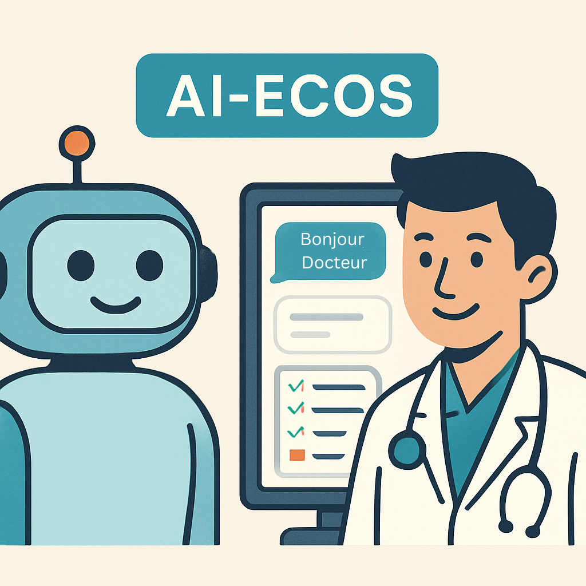
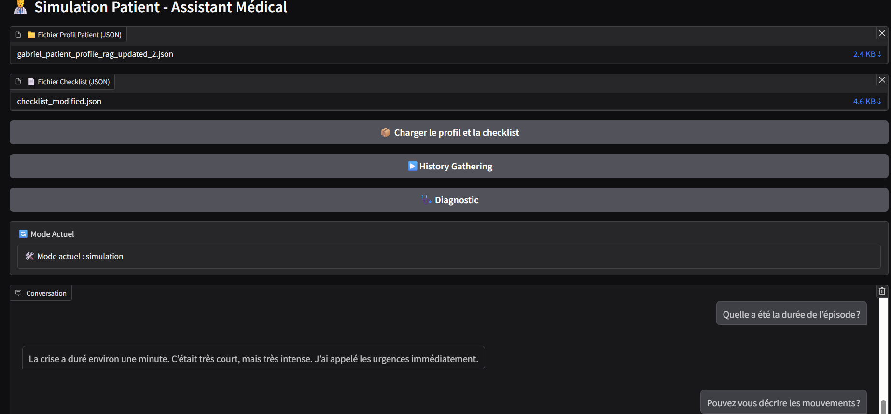

(Artificial Intelligence – Examen Clinique Objectif Structuré) Le premier chatbot intelligent médical francophone conçu pour simuler des patients virtuels et évaluer les compétences cliniques des étudiants en médecine.
 Accéder au projet Accéder au rapportLes ECOS évaluent les compétences cliniques des étudiants en médecine depuis les années 1970.
✅ Interactions avec des patients standardisés. ✅ Évaluation des diagnostics et compétences de communication.
⚠️ Limites : coût élevé, organisation lourde, dépendance aux acteurs.
AI-ECOS simule des patients virtuels réalistes et fournit un retour automatique aux étudiants.
Découvrez un aperçu du chatbot en action :
Le projet AI-ECOS est actuellement en cours de développement. Cette version représente uniquement un prototype de ce qui est prévu.
👉 Vous pouvez néanmoins accéder au dépôt GitHub et suivre les instructions pour démarrer l’MVP en local.
Consulter le dépôt GitHubProjet final mené à EFREI Paris, en collaboration avec l’AP-HP.
Cet outil est conçu uniquement pour des fins éducatives. Il ne remplace pas une consultation médicale et ne doit pas être utilisé pour établir un diagnostic réel.